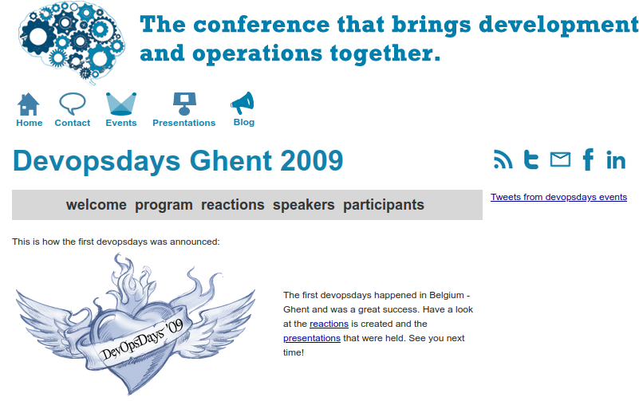

Project DevOps: Operations
Kick-off
HOGENT applied computer science
Bert Van Vreckem
2021-2022
Course intro
Eerst en vooral
- Engelse slides (IC)
- NL uitleg + studiewijzer
Variants:
- Regular curriculum: 8SP
- Distance learning (TIAO): 8SP
- Transitional curriculum: 5SP
- Transitional+distance learning: 5SP
- International Curriculum (IC): 8SP
Traditional org

DevOpsDays 2009

DevOps

DevOps = CAMS
- Culture - interdisciplinary product-teams
- Automation - CI/CD, Infrastructure as Code
- Monitoring
- Sharing - e.g. DevOpsDays and similar events
The project
- Developing an application for an external customer
- Android app
- .Net + DB backend
- Assignments:
- Kolveniershof - personnel rostering
- HoutKunst - auctioning
- HIER coworking - meeting room scheduling
Your role
- Site Reliability Engineer
- Release Engineer
Site Reliability Engineer (SRE)
- Set up test, acceptance, production environment
- automated!
- High Availability
- Monitoring
- Advise customer w.r.t. production platform
Environments
- Test environment
- Runs on developer’s laptop
- Acceptance environment
- Cloud platform
- Configured exactly like production
- For testing purposes
- Production environment
- Used by actual users, customer
Automated setup => reproducable
Release Engineering
- Continuous Integration build pipeline
- Automating development tools
CI pipeline
On each push to repo:
- Linting, static analysis
- Execute unit test suite
- Code coverage analysis
- Deploy backend-code in acceptance env
- Execute acceptance tests
- Package mobile application for app-store
- Send feedback to devs
Tooling
- Commit hooks
- Allow (part of) CI pipeline to run on dev’s laptop
- Create ticket/issue when CI pipeline fails
- …
Expectations
Professional behaviour
- Respect
- Work ethic
- Responsibility
- Initiative
- Communication
- Collaboration
Coaching
Regular progress meetings
- Technical coaches
- Regular: Monday afternoon
- TIAO: on appointment
- Project Management coaches (analyse)
- Together with devs
- On appointment
Planning
Week 1
- Kick-off
- Group assignment
TODO
- Read study guide
- Watch intro videos (Chamilo)
- PoC test environment
- deploy .Net app on Docker
- provide manual for devs
- Vagrant?
Focus on:

Week 2
- Demo PoC test deployment
- First progress meeting PM (analyse)
TODO
- Architecture plan
- Tools and platforms
- Cloud platform
- CI/CD
Suggestions
- Cloud platform
- Azure, AWS, DigitalOcean, … (free credits)
- Combell, Sentia, OVHCloud, … (more suitable for production?)
- CI/CD
- Jenkins
- Github Actions
- GitLab CI
- Travis CI
- …
- Monitoring
- Prometheus, Collectd, …
Week 3
- Discuss chosen tools/platforms, feedback
TODO
- Set up acceptance environment
Week 4
- Demo: .Net deployment in acceptance env
Week 5 and onwards
- Regular progress meetings
- Expand on necessary infrastructure
- Automate all the things!
- Advice on production environment
- Customer oriented!
- Cost estimate based on monitoring data/stress tests
Assessment
- 70% product, project portfolio
- code + documentation + reporting
- 30% observation of student functioning
- professional behaviour, project management
Absence
- Absent from progress/customer meetings, presentation, …
- Insufficient involvement in group work
Resit
- 70% individual assignment (TBD)
- 30% observation
- Original grade is preserved
- Absent? no resit possible!
Project portfolio
- Source code
- Documentation
- Personal log + time sheet
That’s it!
Good luck!

Question time

TODO
- Read study guide
- Watch intro videos (Chamilo)
- PoC test environment
- deploy .Net app on Docker
- provide manual for devs
- Vagrant?